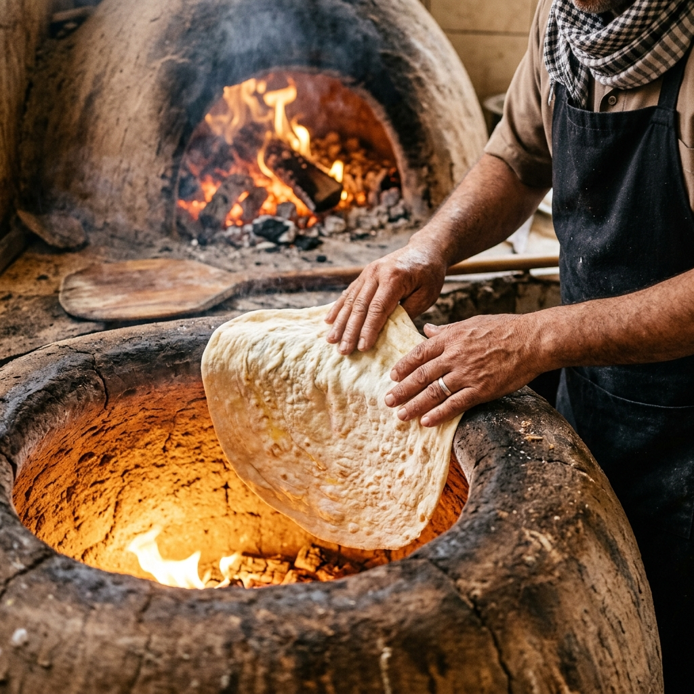
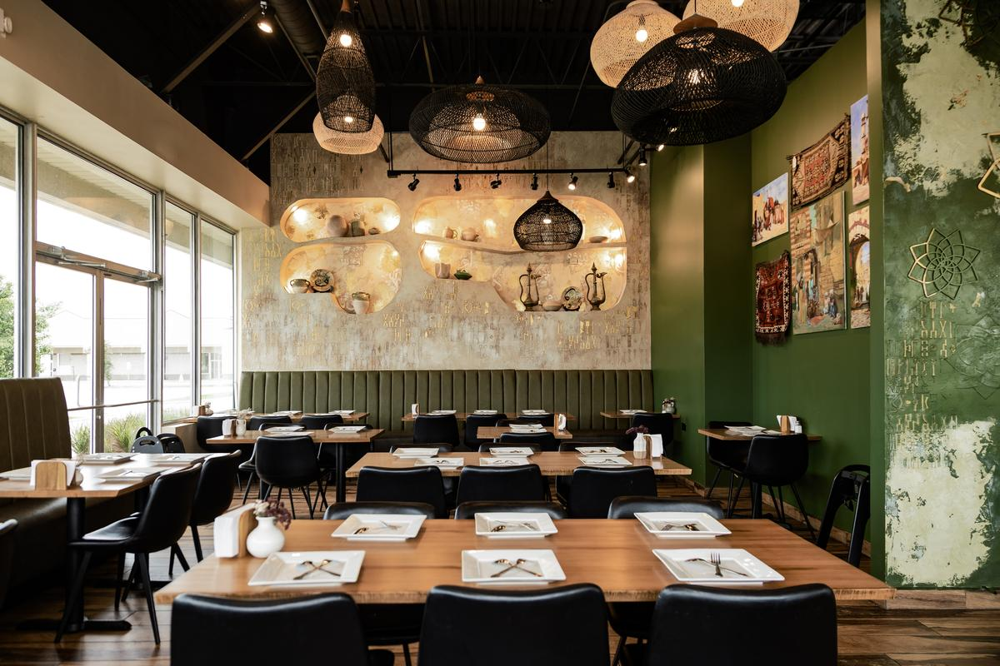
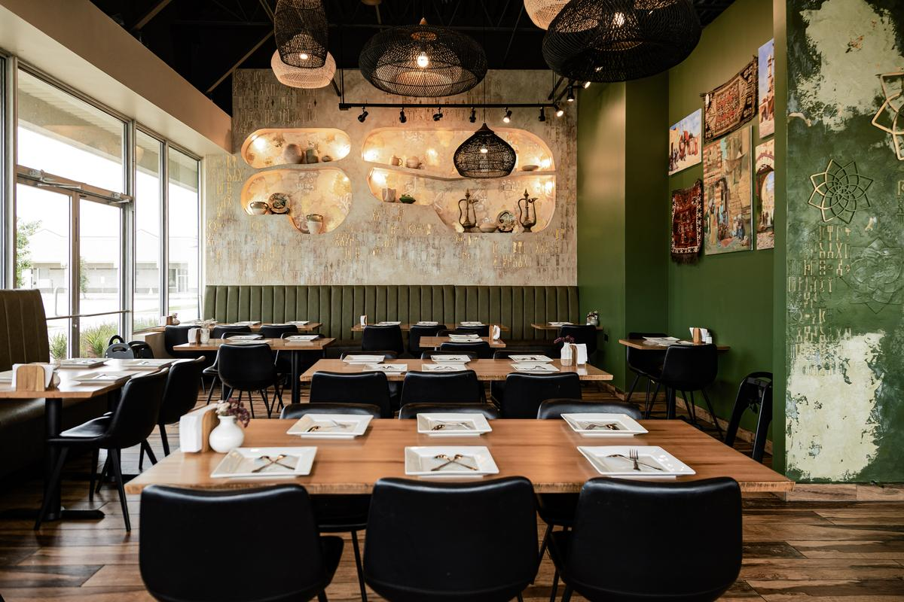

Heritage, Flavor, and Hospitality
Sufra was born out of a desire to create a true culinary bridge between Yemen and Lombard, Illinois. The word "Sufra" represents the traditional floor mat or table spread where families gather to eat. It symbolizes unity, sharing, and the sacred warmth of food.
Yemeni culinary history is one of the oldest in the world, heavily influenced by its position along ancient spice routes. We founded Sufra to keep these historic traditions alive, importing authentic spices and practicing ancient methods to deliver rich, slow-cooked profiles that cannot be rushed.
Every recipe at Sufra is an heirloom, representing the soul of Yemeni homes and the generous hospitality that makes every guest feel like royalty.


Our mission is simple: to make Sufra the ultimate fine dining destination for authentic Yemeni cuisine in Lombard, while setting a new benchmark for upscale Middle Eastern hospitality.
No shortcuts. We use ancestral recipes, traditional stone pots, and slow-cooking clay ovens to ensure every bite is authentic.
We serve 100% hand-slaughtered HFSAA Halal meats and fresh organic produce, using fresh, house-ground spices for maximum flavor.
Lavish generosity is built into our culture. Our staff is dedicated to creating a warm, comfortable, and memorable visit.
Sufra is a sanctuary built for family reunions, friendly catchups, business meetings, and community celebrations.
The culinary creations at Sufra are directed by experienced chefs who possess decades of expertise in authentic Middle Eastern and Yemeni cuisines. Passionate about preserving historic techniques, our kitchen masters understand the delicate chemistry of Yemeni spices—how cardamom, cumin, turmeric, coriander, and black pepper interact to create complex flavor notes.
Under their guidance, slow-cooking is treated as an art form. Whether it is roasting the Lamb Hanith for hours in customized ovens, or preparing the broth for clay-pot Fahsa to simmer at perfect temperatures, our culinary team guarantees consistency, flavor depth, and premium plating in every single dish.

The five key reasons why diners return to our table time and time again.
Our hours of slow roasting make lamb and chicken exceptionally tender and juicy.
Stews are served sizzling directly in traditional clay pots for heat and aroma.
Gigantic Yemeni Mulawah flatbread baked fresh per order and served warm.
A beautiful, upscale interior space with cozy booths and gorgeous accents.
100% strict hand-slaughtered Halal certification gives complete peace of mind.